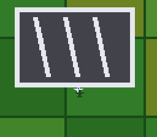

|
OpenSNES
Modern Open-Source SNES Development SDK
|
|
OpenSNES
Modern Open-Source SNES Development SDK
|

A plane over a Mode 7 landscape (#4, part 2). The core trick: altitude drives the Mode 7 scale — climbing zooms the terrain out, diving zooms in — and a shadow sprite slides away from the plane as you climb: the two classic SNES depth cues, from two register writes per frame.
| Input | Action |
|---|---|
| D-pad left/right | turn |
| Up / Down | climb / dive |
| A / B | throttle up / down |
Objective: land on the three striped pads (slow and low over a pad — green flash). Water is a splash (respawn); touching fields too fast bounces you back up. The terrain (patchwork fields, river and lake, three helipads) is generated at build time by gen_terrain.py (committed, deterministic).
ROM mode: LoROM (project default).
console, dma, background, sprite, math, mode7, input